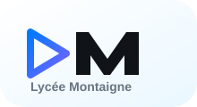
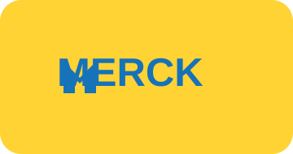

Profil
Waseem Altaweel
Passionné par l'infrastructure réseau, les systèmes et la cybersécurité, je prépare un BTS SIO option SISR avec l'objectif de poursuivre vers l'ingénierie des systèmes numériques industriels.
Parcours
Mon parcours avance par étapes : une base scolaire, une réorientation progressive vers l'informatique, puis une professionnalisation avec l'alternance.
2021 - 2022

Baccalauréat général
Lycée Montaigne de Mulhouse.
2022 - 2024

Licence Accès Santé
UFR Santé, Université de Besançon.
2024 - 2026

BTS SIO SISR
Formation à CCI Campus Strasbourg.
Depuis juillet 2024

Alternance
Systèmes, réseaux et support technique.
Rentrée 2026

Objectif ICAM
Ingénieur spécialisé en systèmes numériques industriels.
Parcours de professionnalisation
Mon parcours en BTS SIO SISR se construit autour de situations concrètes : comprendre une infrastructure, documenter ce qui est fait, sécuriser les accès et garder une méthode claire lorsque je dois intervenir.
01
Administrer
Postes, serveurs, comptes, services réseau et accès utilisateurs.
02
Sécuriser
Bonnes pratiques, MFA, sauvegardes, segmentation et journalisation.
03
Documenter
Procédures, preuves techniques et dossiers AP3/AP4 pour l'épreuve E6.
Evolution
Tableau d'évolution des compétences
CCI Campus AlsaceBTS SIO SISR
Ce tableau montre l'évolution la plus importante : passer d'une envie personnelle à une méthode professionnelle, utilisable en formation comme en entreprise.
Avant : envie sans cadre
→
Après : méthode, diagnostic et posture pro
Organisation
Je travaillais au feeling, sans suivi ni traces.
Je prépare, j'exécute, puis je documente.
Diagnostic technique
Je testais sans vraie méthode quand ça ne fonctionnait pas.
Je constate, j'isole avec le modèle OSI, je teste, puis je corrige.
Posture pro
Le travail me semblait surtout contraignant.
Je travaille en équipe, avec délais, cahier des charges et responsabilité.
Projection
Je doutais vite et je me projetais difficilement.
Je me vois évoluer en informatique industrielle chez Merck.
Compétences
- Windows Server
- Linux
- Active Directory
- DNS / DHCP
- VLAN
- VPN IPsec
- pfSense
- OpenVPN
- UniFi
- Cisco
- Supervision
- Sauvegarde
- Support technique
- Documentation
- Cybersécurité
- CCNA en cours
Perspective
Objectif 2026
La suite logique de mon parcours est de relier l'informatique, les réseaux et le monde industriel : continuer à apprendre, mais dans un contexte plus technique, concret et professionnel.
Formation visée
ICAM
Intégrer le cursus d'ingénieur spécialisé en systèmes numériques industriels à la rentrée 2026.

Projection professionnelle
Merck Life Science
Évoluer en alternance sur un poste d'ingénieur informaticien industriel.